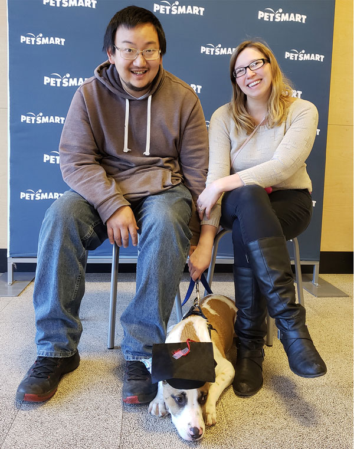

About Me
Hello everyone! My name is Cheryl Ju (formally Sampson, as you will see on some of my portfolio examples.) I married the love of my life, Denny, in May 2018 lakeside at a beautiful resort.
We quickly rescued our first puppy, Leo, shortly after our big day. Not even a year later, we completed our family of four with Luna, another dog adopted from the local rescue.
Apart from my family, I started my Graphic Design and Hand-Crafted business in late 2017; however, I didn’t start selling my hand-crafts until the pandemic hit in 2020. Feel free to hop on over to my shop to see all the different hand-crafted items I currently have for sale.
I started my graphic design journey in the mid-2000s. During my weekends and off days, I began to teach myself HTML and CSS while learning how to design on Paint Shop Pro. When I graduated high school, I realized I wanted to continue my graphic design education. I graduated in 2014 from Cabrini College (now known as Cabrini University) with a Bachelor of Arts degree in Graphic Design. However, at the time, Cabrini mainly focused on print design, and the few web classes I had left me feeling not confident in my web skills.
After many years of contemplating continuing education and learning more about web design, the pandemic helped me realize the need for remote online work. I decided to start my journey in getting my Master of Arts in Mass Communications with a specialization in Web Design from the University of Florida College of Journalism and Communications in 2020.